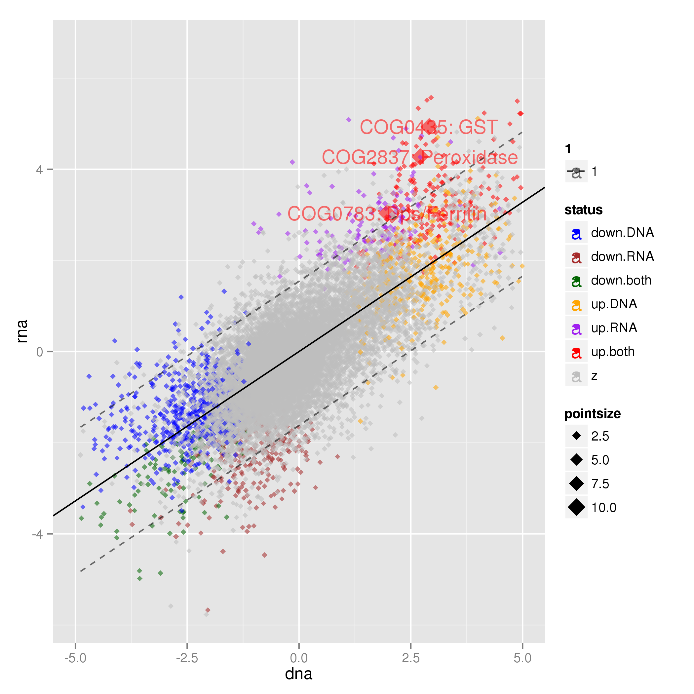

Defining colitis-dependent NOGs¶
Create a link to the goi.tsv file in the data/ directory. This will become clearer in a little while:
$ ln -s ../data/goi.tsv .
We can run the overlap analyses and PCA for NOGs as we did for genera (DNA) in the previous sections (in the compare_datasets/ directory). We won’t therefore go over the same functions.
Out metagenomeSeq analysis was performed on NOGs and we identified 1221 and 669 NOGs to be differentially abundant in metagenomic and metatranscriptomic data sets, respectively. The overlap between these sets suggested that there were some NOGs that were transcriptionally activated in colitis, leading us to hypothesise that these were due to responses by bacteria to an alteration in the gut niche.
A few tasks were performed before we produced Fig. 2g - some of which did not end up in the manuscript. For example we built the RNA fold / DNA fold ratio for NOGs using the metagenomeSeq differential abundance files. In the comparison.dir:
>> import Proj029Pipelines.PipelineMetaomics as PipelineMetaomics
>> PipelineMetaomics.buildRNADNARatio("../DNA/gene_counts.diff.tsv",
"../RNA/gene_counts.diff.tsv",
"rna_dna_ratio.tsv")
Then we built a list of NOGs that were common between the DNA and RNA data sets from the databases that contain tables of differential expression results. First load the tables:
>> PipelineMetaomics.buildCommonList("../RNA/csvdb",
"../DNA/csvdb",
"common_genes.tsv")
then we build the differentially abundant NOGs list from database (Hh + aIL10R vs. Steady state):
>> PipelineMetaomics.buildGeneDiffList("../RNA/csvdb",
"common_genes.tsv",
"rna_diff_genes.tsv")
>> PipelineMetaomics.buildGeneDiffList("../DNA/csvdb",
"common_genes.tsv",
"dna_diff_genes.tsv")
and just before plotting we annotate NOGs with their differential abundance status i.e in DNA, RNA or both data sets:
>> PipelineMetaomics.annotateRNADNARatio("rna_dna_ratio.tsv",
"dna_diff_genes.tsv",
- 1 “rna_diff_genes.tsv”,
- “rna_dna_ratio.annotated.tsv”)
and we plot the DNA and RNA fold changes, fit a linear model and plot the 95% prediction intervals. There is a little bit of sneakyness here as before we created the final plot we found NOGs of interest. This function picks up a file called goi.tsv that contains annotations for the plot. These annotations are for NOGs that are annotated as being involved in oxidative stress resistance and are up-regulated in metatranscriptomic data and defined as colitis-responsive (lying outside of the 95% prediction interval for the model fit):
>> PipelineMetaomics.plotSets("rna_dna_ratio.annotated.tsv",
"rna_dna_ratio.annotated.png")
This will produce Fig.2g.
{kind=link}
And that is Fig. 2 done!